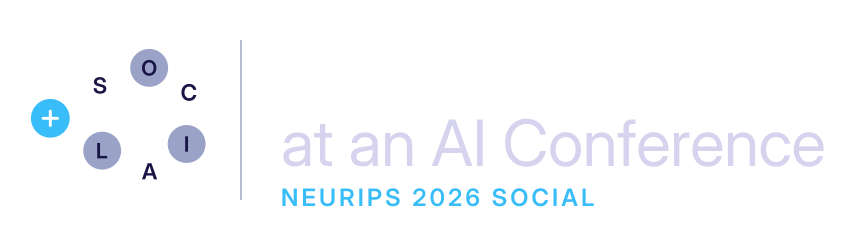

Quality over quantity
Great networking is less about how many people you meet and more about how well you connect: shared interests and genuine curiosity win every time.1

Escape the academic flock. Two hours of guided icebreakers, speed-networking and themed round tables, so you leave with real connections instead of a pocket full of awkward small talk.
Thursday, December 10, 2026, 7:00–9:00 PM Paris time (CET, UTC+1)
The NeurIPS site shows times in the conference's Sydney time zone, so the listing reads "Fri, Dec 11, 2026 · 5:00 AM – 7:00 AM AEDT". That is the same 2-hour slot.
Palais des Congrès Room 153
Palais des Congrès de Paris (Paris Congress Center)
2 Place de la Porte Maillot, 75017 Paris, France
Metro: Porte Maillot (line 1). Open in Maps
NeurIPS 2026 Paris: one of the conference's locations, alongside Sydney and Atlanta.
Listed by NeurIPS as a Social in the Paris program.
neurips.cc/virtual/2026/loc/paris/social/180835
Check the listing for any last-minute changes to the room or time.
Let's be honest: a conference the size of NeurIPS can be a lot. Coffee breaks and receptions have a way of turning into "academic flocking," where everyone drifts back toward the people they already know, and the rest of the room might as well be behind glass. If you're early in your career or new to the community, it can feel like everyone got a rulebook except you.
This social is that rulebook, with jokes. We'll take the awkwardness of networking seriously enough to laugh at it, then give you practical, evidence-based ways to get past it. No elevator pitches, no business-card speed-dating, no pretending small talk is fun.
Great networking is less about how many people you meet and more about how well you connect: shared interests and genuine curiosity win every time.1
Treat social skills like research skills: with a growth mindset, you get better with practice.2 This is a low-stakes place to practice.
We break the complicated dance of conference socializing into manageable (and dare we say, enjoyable) moves you can reuse all week.
Two hours, four parts. Structured enough that you never have to stand alone by the snacks; relaxed enough that it still feels like a social.
A short, (hopefully) funny kickoff from the organizers: the classic networking pitfalls, and a simple framework for starting and keeping a conversation going.
Quick, guided conversations in pairs and small groups, with prompts that skip straight past the weather:
Pick a table, pick a topic. Each table has a theme and a facilitator who makes sure everyone gets a word in. Possible themes include:
Reconnect with the people you clicked with, or try your newly honed skills on someone new, no prompts required.
Everyone at NeurIPS who has ever hovered at the edge of a conversation wondering how to get in. First-time attendees, students, postdocs, industry folks, and seasoned researchers who'd like to meet someone outside their usual circle are all welcome. The whole point is to mix.
We're a living example of the message: 7 organizers from 5 institutions across academia and industry, who met through (you guessed it) good communication and networking.
Judah Goldfeder
Columbia University
Philippe Wyder
Distyl AI
Sohei Arisaka
Kajima Corporation
Ravid Shwartz-Ziv
New York University
Yoni Brander
Innodata
Chirag Sharma
Distyl AI
Karime Maamari
Distyl AI